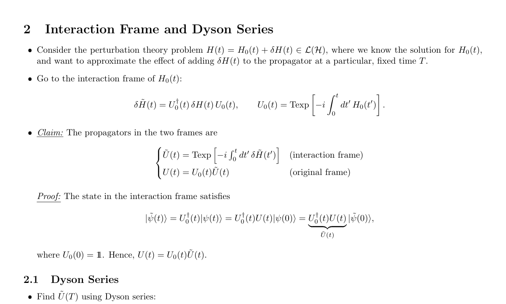

Resources & Side Projects
Notes
A collection of personal technical notes I've accumulated over the course of my research.
If you spot a mistake, please let me know so I can correct it. I'd appreciate it!
Side Projects
- Physics Stack Exchange. A place to exercise my physics muscles with other curious people.
- Qubit Golf. A little game I vibe-coded to build intuition for single-qubit operations.
- Bloch-Sphere-Blender. A little Python module for creating custom animations from Bloch sphere trajectories in Blender